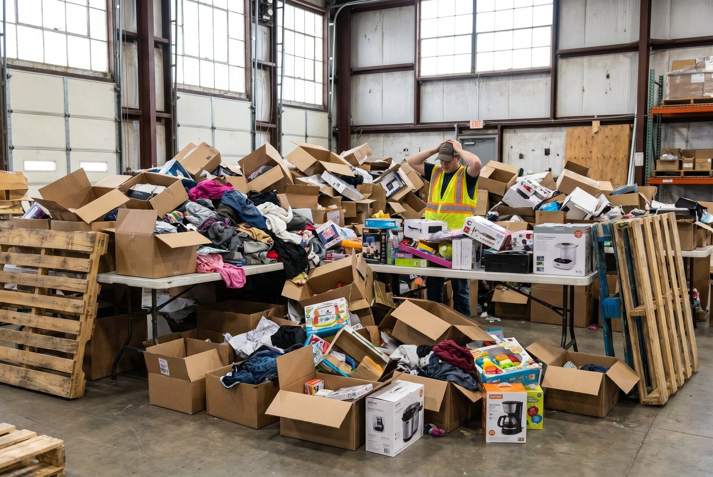

Dit lager er bygget til at sende varer ud. Men 20-30% kommer tilbage. Og hver dag de venter, taber de 2-5% i værdi. En smartphone der ligger 30 dage? 15-25% væk. Returvarer er ikke logistik. Det er cash flow.
De fleste lagre er bygget til én retning. Varerne går ud. Kunderne er glade. Men det flow holder ikke. Returprocenter på 20-35 procent i tøj og 8-11 procent i elektronik er ikke undtagelser mere, de er baseline. For en webshop med 5.000 ordrer om måneden betyder det 400-1.750 returvarer der skal håndteres, hver måned. Hvis den gennemsnitlige håndteringstid er fire dage og genværdien falder to til fem procent per dag, er det reelle tab betydeligt. Og en reverse supply chain der ikke er klar til det omvendte flow er ikke et fremtidsproblem. Right to Repair er vedtaget i EU og træder i kraft. Recommerce-markedet vokser hurtigere end nyt salg i flere kategorier. Lageret der ikke er bygget til det omvendte flow taber penge hver dag, ikke fordi folk klager, men fordi varerne bare venter.
Det flow ingen har planlagt
En returvare lander på lageret. Hvad sker der? I de fleste operationer: ingenting systematisk. Den lander i en kasse, i et hjørne, måske på en midlertidig hylde. Ingen i systemet ved den er der. Ingen har tildelt den en lokation. Ingen har besluttet om den er salgbar, defekt, eller skal retur til leverandøren.
Det er ikke et menneske-problem. Det er et system-problem.
Lagermedarbejderen har ikke fået instruktioner fordi systemet ikke har et returflow. WMS-systemet kender ikke til returvarestatus som et begreb med egne regler og processer. Og så venter varen. En dag. Tre dage. En uge. To uger.
Mens den venter sker der to ting. For det første: den optager plads, og den plads koster penge. For det andet: dens salgsværdi falder. En brugt smartphone der venter 30 dage er 15-25 procent mindre værd end den var ved ankomst, fordi markedet for refurbished elektronik bevæger sig hurtigt, og fordi varen ikke er synlig i nogen salgskanal.
Manuelt kaos uden systemstøtte er ikke bare en ineffektivitet. Det er en direkte omkostning der akkumulerer stille og roligt mens du fokuserer på det udgående flow.
Et WMS der er konfigureret til returflow ændrer det. Returvaren scannnes ind, tildeles en midlertidig karantænelokation, og en opgave genereres automatisk til kvalitetsvurdering. Fra det øjeblik er den i systemet, og dermed under kontrol.
Recommerce er ikke niche mere
Markedet for brugte, refurbished og reparerede varer vokser markant hurtigere end markedet for nyt salg i flere centrale kategorier. Tal fra analysehuse som Statista og ThredUp peger på, at det globale recommerce-marked for tøj alene forventes at nå 350 milliarder dollar i 2028, op fra ca. 200 milliarder i 2023. I elektronik er refurbished-salg en etableret kategori hos alle store platforme.
For en dansk webshop er konsekvensen konkret: enten er recommerce et aktivt forretningsben, eller det er profit der forsvinder. En returvare der kasseres uden vurdering er potentielt 200-800 kr. der bare smides ud. En returvare der sælges som B-vare til 60 procent af nyprisen er en margin der eksisterede.
Hvad kan en returvare rent faktisk blive til?
- Recertificeret A-vare: Gennemgået, testet, solgt som "Certified Refurbished" til reduceret pris med garanti. Høj margin relativt til genbehandlingsomkostning.
- B-vare: Kosmetiske fejl, fuld funktionalitet. Sælges billigere, typisk via egne kanaler eller recommerce-platforme som Back Market, Refurbed eller Swappie.
- Udlejningsflow: For produktkategorier der egner sig til det: udstyr, elektronik, tøj til specielle lejligheder.
- Reservedele: Defekte enheder der ikke kan sælges som produkt, men hvis komponenter har selvstændig salgsværdi.
- Donation med skattefordel: Varer der ikke kan sælges men heller ikke bør kasseres. Donation til godkendte organisationer giver skattefradrag og reducerer affaldsomkostning.
Ingen af disse muligheder aktiveres automatisk. De kræver processer, systemstøtte og beslutninger ved ankomst. Det er præcis det reverse flow handler om.
👉 Vil du vide hvordan SmartPack håndterer returvarer i praksis? Tal med SmartPack om dit retursetup →
Right to Repair og hvad det kræver på lageret
EU's Right to Repair-direktiv (direktiv 2024/1799) blev vedtaget den 13. juni 2024 og skal implementeres i medlemslandene inden 31. juli 2026. Det betyder ikke at alt ændrer sig på én gang, men det betyder at reparerbarhed og reservedelsadgang inden 2026 er et lovkrav for en række produktkategorier, startende med husholdningsapparater, elektronik og smartphones.
Konkret for en webshop der sælger de berørte kategorier: du skal kunne levere reservedele til kunderne. Ikke som goodwill, men som et lovkrav. Og det stiller nye krav til lagerdriften.
Reservedele er ikke det samme som færdigvarer. De har egne regler:
- Separat SKU-struktur: Et bagpanel til en smartphone er en anden vare end smartphonen. Det kræver sine egne SKU'er, egne lagerlokationer, egne genbestillingsniveauer.
- ESD-beskyttelse: Elektroniske komponenter kræver antistatisk opbevaring. Det er en fysisk lagerinvestering der ikke er nødvendig for færdigvarer.
- Temperatur- og fugtighedskrav: Visse batterier og komponenter kræver kontrolleret opbevaring.
- Lav salgspris, høj kundevolumen: Et batteri til 149 kr. generer mere transaktionelle ordrer end en ny enhed til 2.499 kr. Det påvirker pluk-frekvens og ordrehåndtering.
Et WMS der behandler reservedele som færdigvarer er ikke konfigureret til virkeligheden. Reservedele har kortere hyldelevetid, anderledes opbevaringskrav og et helt andet salgsvolumen-mønster. Det kræver en separat varestruktur i systemet.
De operationer der ikke forbereder sig nu, vil stå med et akut problem i 2026, ikke i god tid men på deadlinen.
Hvad kræver det operationelt
Det omvendte flow er ikke bare en hylde til returvarer. Det er en separat operation med egne processer, egne lokationer og egne systemkrav. Her er hvad der skal på plads:
- Separate modtagelokationer: Returvarer må aldrig blandes med nymodtaget gods. Det lyder indlysende, men det sker konstant i operationer uden systemhåndhævelse. En returvare der lander i indgående gods-zonen kan ende genplaceret som ny vare, med fuldt forventeligt resultat: en kundeklage og endnu en retur. Returvarer skal have en dedikeret karantænezone der er fysisk og systematisk adskilt.
-
Kvalitetsvurdering ved ankomst: Hver returvare vurderes og klassificeres, helst inden for 24 timer efter ankomst. Et simpelt klassificeringssystem:
A = Salgbar som ny (uåbnet eller fejlfri)
B = Kræver behandling (rengøring, kosmetisk fejl, ny emballage)
C = Reservedele (defekt enhed, men komponenter brugbare)
D = Kassation (ingen genvindingsværdi)
Klassificeringen skal registreres i systemet, ikke bare på papir, for at aktivere det korrekte næste flow. - Separat refurb-flow med egne batchprocesser og SKU'er: B-varer og refurbished produkter er ikke de samme SKU'er som de tilsvarende nye varer. De har en anden prissætning, en anden beskrivelse og en anden forventning fra kunden. Det kræver egne SKU'er i systemet og egne batchprocesser for behandling, test og recertificering.
- Sporbarhed hele vejen: For garantihåndtering, for ESG-rapportering, for reklamationsbehandling. Hvilken returneret vare blev til hvad? Den sporbarhed er ikke valgfri i en kommende regulatorisk verden. Det kræver at systemet logger hvert trin fra returmodtagelse til endelig disposition.
- Integration til webshop og recommerce-platform: Refurbished-varer og B-varer skal i en salgskanal. Det kan være din egen webshop med separat kategori, eller en ekstern platform. Uanset hvad kræver det en systemintegration så lagerbeholdningen er korrekt og ordrer kan håndteres. Se også Shopify-integration for muligheder her.
SmartPacks returhåndtering er bygget til at understøtte netop dette flow, fra modtagelse og klassificering til re-aktivering i salgskanalen.
Økonomi i det omvendte flow
Returomkostninger opfattes ofte som sunk cost. Varen kom retur, det koster hvad det koster, og vi prøver at minimere skaden. Men se på regnestykket: En jakke til 800 kr. kommer retur. Dag 1 kan den sælges som B-vare til 480 kr. (60 procent). Dag 7, stadig i "afventer vurdering": 400 kr. (50 procent). Dag 14, sæson er ved at være ovre: 240 kr. (30 procent). Dag 30, kasseres eller doneres: 0 kr. Beslutningsforsinkelse på to uger kostede 240 kr. per vare. På 1.000 returer er det 240.000 kr. der bare forsvandt. Ikke til konkurrenter. Bare ud.
Lad os regne konkret. Lageromkostninger per dag per vare ligger typisk på 2-8 kr. afhængigt af lagertype, lokation og kapitalomkostning. En smartphone der venter 21 dage på en beslutning koster dermed 42-168 kr. i ren lagerplads, udover den faktiske værdifald på varen.
For tidsfølsomme varer er billedet endnu skarpere:
- Refurbished smartphone: falder 1-2 procent i markedsværdi per uge grundet nye modeller og markedsudvikling
- Sæsonbestemt tøj: nul restværdi efter sæsonslut, fuld restværdi i starten af sæsonen
- Elektronik generelt: 15-25 procent lavere markedsværdi efter 30 dages ventetid
Hvad effektivt reverse flow reducerer i praksis:
- Behandlingstid: Fra 5-10 dage til 1-2 dage med systematiseret flow
- Fejlklassificeringer: Varer der kasseres selvom de er salgbare, eller sælges som nye selvom de er returnerede
- Tab på salgspris: En vare klassificeret og geninventariseret på dag 1 sælges til en højere pris end den samme vare klassificeret på dag 14
Det er ikke bæredygtighed. Det er regneark. Og det holder.
Konkret break-even på recommerce-flow: Tag 500 returvarer per måned med en gennemsnitlig nyværdi på 800 kr. Sælges de som B-varer til 60 procent af nyprisen: 480 kr. per vare. Fratrækkes 80 kr. per vare i behandling og test: 400 kr. netto per vare. Månedlig profit: 200.000 kr. Hvis de samme 500 varer kasseres: 0 kr. Hvis de venter 30 dage ubehandlet: minus 60.000-120.000 kr. i lagerplads og værdifald. Forskellen er ikke logistik. Det er prioritet.
Repair economy og Create2STAY
Repair economy, eller reparationsøkonomi, er begrebet for det samlede system af produkter, platforme og services der er bygget omkring at forlænge produkters levetid frem for at erstatte dem. Det er ikke et niche-fænomen. Det er en strukturel ændring drevet af kombinationen af EU-regulering, stigende råvarepriser og ændrede forbrugerforventninger.
For en virksomhed der opererer i kategorier som elektronik, husholdningsapparater, sport- og outdoorudstyr eller tøj, er repair economy ikke noget der sker derude, det sker i din kundedatabase. Kunden der vil have sit produkt repareret frem for erstattet er allerede en kundeforventning, og med Right to Repair-direktivet er det snart en ret.
Det kræver infrastruktur: en reservedelsportal, et reparationsflow for slutbrugeren, en logistik der kan håndtere ind- og udsendelse af produkter til reparation, og et lager der kan styre de involverede reservedele og reparationsenheder som separate entiteter.
Flere brands arbejder aktivt med repair og reservedele som en reel del af kundeoplevelsen. Et eksempel er Create2STAY, der hjælper brands med at bygge repair- og recommerce-infrastruktur, fra reservedelsportal til reparationsflow for slutbrugeren.
SmartPack samarbejder med Create2STAY om at forbinde lagerdriften med det omvendte flow, så virksomheder der arbejder med reparation og recommerce har et backend der kan håndtere det i praksis.
Create2STAY bruger SmartPack til at styre lagerflowet bag repair, resale og upcycling for mode- og livsstilsbrands.
Fremtidens krav
De næste tre til fem år er ikke futurisme. Det er kendte regulatoriske ændringer og markedstendenser der allerede er sat i gang.
EU's cirkulære økonomi-agenda: Right to Repair er vedtaget. Ecodesign for Sustainable Products Regulation (ESPR) indfører krav om reparerbarhed og levetid for en bred række produktkategorier frem mod 2030. Det er lovgivning, ikke frivillige initiativer.
Kundeforventninger til recommerce: Den generation der er vokset op med Vinted (over 40 millioner brugere i Europa), Back Market og Facebook Marketplace forventer at kunne købe brugt, sælge brugt og få repareret. Vinted voksede 51 procent i 2023. Det er ikke en trend. Det er et strukturelt skift i forbrugeradfærd.
ESG-rapportering: Fra 2025 er CSRD (Corporate Sustainability Reporting Directive) obligatorisk for store virksomheder, og kravene udvides gradvist. En del af den rapportering handler om produkters levetid, affaldsvolumen og reparationsandel. Det kræver data, og det data skal komme fra lagerdriften.
Right to Repair som baseline: Inden 2026 er det ikke et spørgsmål om du vil tilbyde reservedele og reparationsmuligheder for berørte produktkategorier. Det er et spørgsmål om du er klar til at gøre det operationelt.
Hvad kræver det konkret:
- Et WMS med reverse flow-konfiguration, ikke bare en returhylde
- Processer der er designet begge veje fra dag ét, ikke retrofitted når problemet opstår
- Systemintegration til repair- og recommerce-platforme
- Data og sporbarhed der understøtter ESG-rapportering og garantihåndtering
De operationer der bygger det nu har et konkurrencefortrin om to år. De der venter, har et compliance-problem.
Logistik har altid været énvejs. Varen går ud. Men markedet kræver noget andet nu. De virksomheder der får det omvendte flow til at køre, har et konkurrencefortrin, ikke bare i bæredygtighed, men i økonomi, kundetilfredshed og fremtidig compliance.
Hvornår giver det mening at investere? Har du 500 eller flere returer om måneden og en gennemsnitlig produktværdi over 300 kr., er business casen klar. Under det: start manuelt, test konceptet i 90 dage, automatiser når volumenet er der. Det er ikke en niche. Det er næste fase i lageroperation.
Brug denne artikel
- ✓ Kortlæg dine returprocenter per produktkategori. Hvilke kategorier har over 15 procent retur?
- ✓ Tjek om dit WMS har separate modtagelokationer og klassificeringsflow for returvarer
- ✓ Identificer om du sælger produkter der er covered af Right to Repair-direktivet pr. 2026
- ✓ Beregn din aktuelle lageromkostning per dag per returvare og gang med gennemsnitlig behandlingstid
- ✓ Vurder om recommerce er et aktivt forretningsben eller en passiv omkostning i din operation